地政学
沖縄は日本の南西端で、東シナ海と太平洋を結ぶ要衝です。那覇の港と空港、先島への航路、米軍基地、自衛隊配置が重なり、島の暮らしは安全保障、外交、物流、観光政策と切り離せません。海の距離が政治を日常にします。
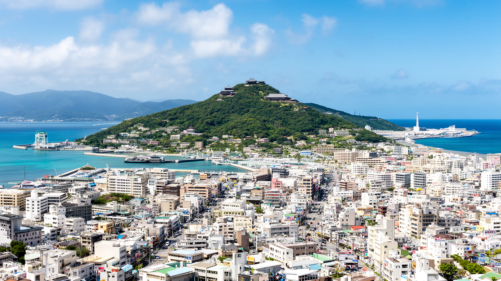
🇯🇵 日本 / 東アジア / World City Atlas
那覇を中心に、琉球王国の記憶、戦争の傷跡、米軍基地、観光経済、島嶼の港と空港、食と音楽、台風と海の暮らしが近い距離で重なる都市圏です。
都市の骨格
沖縄は那覇だけで完結する都市ではありません。首里、浦添、宜野湾、沖縄市、北谷、名護、離島航路が連なり、観光、軍事、港湾、住宅、祈り、戦争記憶が島の限られた土地で交差します。
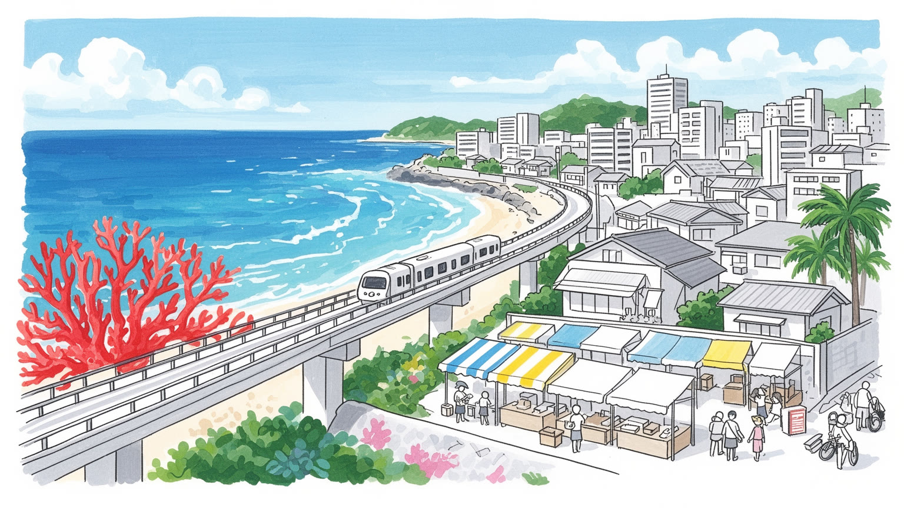
沖縄は日本の南西端で、東シナ海と太平洋を結ぶ要衝です。那覇の港と空港、先島への航路、米軍基地、自衛隊配置が重なり、島の暮らしは安全保障、外交、物流、観光政策と切り離せません。海の距離が政治を日常にします。
観光、基地関連、建設、小売、医療、教育、物流、農水産業が雇用を支えます。ホテル、飲食、清掃、送迎、港湾、介護の仕事は島を動かす一方、賃金、家賃、季節変動、若者の県外流出が生活設計を難しくしています。
琉球王国の記憶、御嶽への祈り、祖先祭祀、エイサー、三線、空手、泡盛、チャンプルー文化が生活に残ります。仏教、神道、キリスト教、米軍由来の習慣も重なり、信仰と芸能が島の時間を刻みます。祈りは街にあります。
旅行者は城跡、海岸、市場、離島、食、音楽を楽しみますが、住民には渋滞、台風、住宅費、基地騒音、所得格差、高齢化、子育てが現実です。観光の成功は、島で暮らす人の海と街を守れるかに深く広くかかります。
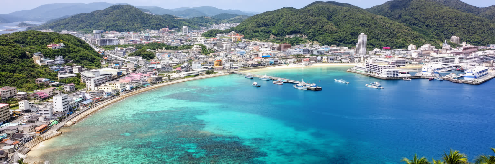
沖縄を都市として読む入口は、島の細長い地形と海上交通にあります。那覇は本島南部の港と空港を抱え、首里の丘、国際通り、泊港、那覇新都心、浦添、宜野湾へ市街地が連なります。北へ行けば中部の基地周辺都市、さらに名護と本部半島、やんばるの森へ都市圏の性格が変わります。海は美しい背景であると同時に、食料、燃料、建材、観光客、離島航路、台風、軍事を運ぶ面です。道路は島の背骨ですが、限られた平地に住宅、学校、商業施設、基地、観光施設が集まり、渋滞が日常を左右します。離島では船と飛行機の本数が医療、進学、物流、家族訪問の条件になります。沖縄の地図は、中心市街地だけでなく、港、空港、橋、フェリー、基地のフェンス、海岸線、珊瑚礁を同時に読む必要があります。海風の塩気、台風前の湿気、バスのブレーキ音、ゆいレールが街を渡る音も、那覇の距離感を作ります。さらに、島の距離感は地図の縮尺より天候と交通手段で決まります。台風で船が止まる日、観光車両が幹線道路に集中する時間、離島から専門医へ向かう移動は、都市の便利さと脆さを同時に示します。市場へ向かう高齢者の歩幅や通学の列も、都市の実感を伝えます。沖縄の都市圏は海をまたぐ生活圏です。那覇だけに中心を置くと、島全体の関係を見失います。中部の商業、北部の自然、南部の慰霊の場、先島の航路が一体で沖縄の空間を作っています。
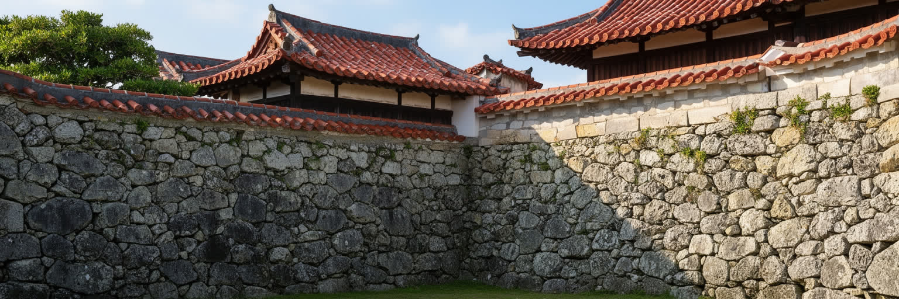
沖縄の都市文化は、琉球王国の歴史を抜きに理解できません。首里城は観光名所である前に、王府、儀礼、外交、工芸、学問、音楽が集まった政治文化の中心でした。琉球は中国、日本、東南アジア、朝鮮との交易と冊封関係の中で独自の言語、礼法、染織、漆器、音楽、食を育て、那覇の港はその接点でした。薩摩支配、明治の琉球処分、県制への編入は、王国の制度を解体しながら日本国家へ組み込む過程でもありました。首里の石畳、御嶽、墓、古い集落、泡盛の蔵、組踊や琉球舞踊には、国家の境界が変わっても続く島の記憶があります。王国史を単なる異国情緒として扱うと、政治的な経験と文化の厚みを見落とします。沖縄の歴史は、日本の周縁ではなく、海を通じて複数の世界を結んだ中心性を持っていました。那覇を歩くことは、港町、王都、植民地的な編入、戦後都市が重なる層を読むことです。首里城の再建も、建物を戻す作業にとどまりません。焼失と復元を経験しながら、県民の記憶、職人の技術、観光、教育、祈りの場所をどう結び直すかが問われています。大学や地域資料館で学ぶ学生、空手道場の子ども、芸能を受け継ぐ若者も、その語り直しを担います。言語や芸能の継承、地名の読み、墓や御嶽の扱いにも、歴史意識は表れます。都市の再開発が進むほど、見えにくい王国の痕跡をどう残すかが大切になります。
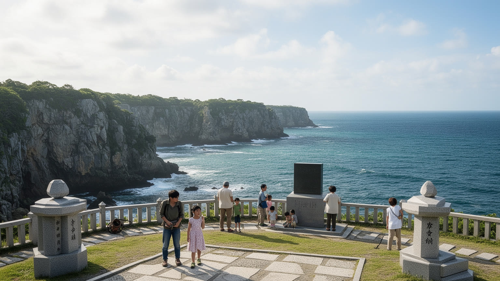
沖縄を語る時、沖縄戦の記憶は避けて通れません。第二次世界大戦末期、住民を巻き込む地上戦によって多くの命が失われ、首里や那覇の街、集落、畑、洞窟、海岸は戦場になりました。ひめゆり、平和祈念公園、摩文仁、ガマと呼ばれる壕、各地の慰霊碑は、戦争が兵士だけの出来事ではなかったことを伝えます。家族の証言、遺骨収集、不発弾処理、学校での平和学習は、戦後何十年を経ても日常に残る記憶の作業です。観光客にとって美しい海岸や緑の丘も、住民には避難、飢え、集団死、米軍上陸、戦後収容の記憶と結びつくことがあります。沖縄戦を学ぶことは、被害の数字を覚えるだけではなく、島がなぜ平和と基地問題を強く語るのかを理解する入口です。記憶の場所を訪れる時は、静かな景色の背後に、言葉にしにくい家族史と地域史があることを意識する必要があります。都市開発や道路工事の現場で不発弾が見つかることは、戦争が地中にも残っていることを示します。証言者が高齢化するほど、学校、資料館、地域の語り部、家族の記録をどう受け継ぐかが重要になります。慰霊の日に街が静かになる感覚、子どもが祖父母の話を聞く時間、平和学習でバスを降りる学生の列も、沖縄の都市生活を理解する手がかりです。ローカル紙やテレビの追悼特集も記憶を家庭へ運びます。記憶は公共空間の時間を変えます。
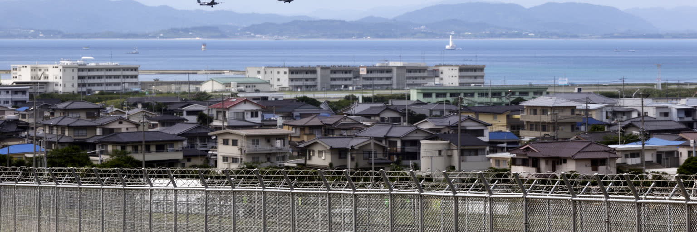
沖縄の地政学は、米軍基地の存在によって日常の問題になります。普天間、嘉手納、キャンプ・シュワブ、キャンプ・ハンセンなどの施設は、日米安全保障の重要拠点である一方、騒音、事故、環境汚染、犯罪不安、土地利用、自治の制約を地域にもたらしてきました。基地は雇用や契約、周辺商業も生みますが、その利益と負担は均等ではありません。通訳、警備、清掃、建設、飲食、修理などの基地労働は家計を支えますが、雇用の安定や事故時の責任は常に問われます。広い土地がフェンスで区切られることは、道路、住宅、学校、商業、自然環境の配置を変え、都市の成長を歪めます。移設や返還をめぐる議論は、単なる施設の場所の問題ではなく、戦後の統治、本土との不均衡、住民投票、国の安全保障政策、地域の将来像がぶつかる政治です。基地のフェンス沿いには、抗議の場、アメリカ文化の影響を受けた街、普通の住宅地が並びます。沖縄を読むには、基地を地図の空白として見るのではなく、生活、経済、環境、記憶を動かす都市空間として見る必要があります。安全保障の言葉は、島の人の睡眠や通学路にも届きます。基地返還跡地が商業地や公園、住宅へ変わる時、土地の使い方は地域の未来像になります。跡地開発は可能性である一方、地価上昇や記憶の消去も起こし得ます。フェンスの内外を分ける線は、土地だけでなく発言権の線にもなります。
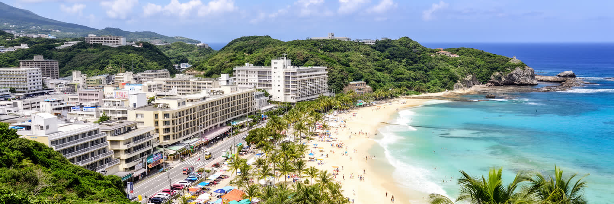
沖縄観光は、那覇の市場、首里城、国際通り、北部の美ら海水族館、リゾートホテル、離島の海、ダイビング、音楽、食、戦跡学習を組み合わせる大きな産業です。第一牧志公設市場では魚、豚肉、島野菜、土産物が並び、周辺の路地では弁当、古着、雑貨、占い、屋台的な商いが観光と日常をつなぎます。航空路線とクルーズ、レンタカー、バス、ホテル、民宿、飲食、土産物、マリンレジャーが雇用を広げ、県外や海外からの来訪者が地域経済を動かします。しかし観光は景気、感染症、台風、航空運賃、為替、国際情勢に左右されやすく、繁忙期と閑散期の差も大きいです。客室清掃、調理、送迎、警備、港湾、案内、ビーチ管理の仕事は見えにくいが、訪問者の快適さを支える基盤です。買い物客で混む国際通り、夜のライブ酒場、海遊びの予約、マラソン大会も観光労働の広がりを示します。沖縄の観光を評価するには、来訪者数だけでなく、収入が地域へ戻るか、若者が安定して働けるか、戦争記憶や琉球文化が浅い演出に縮められていないかを見る必要があります。観光客が消費する海や街は、住民の通勤路であり、子どもの遊び場であり、祖先を祀る土地でもあります。地域への還元、公共交通、環境保全、労働条件を整えなければ、人気そのものが島の負担になります。学びを伴う旅が増えれば、消費の速度を少し遅くし、地域との関係を深める余地も生まれます。
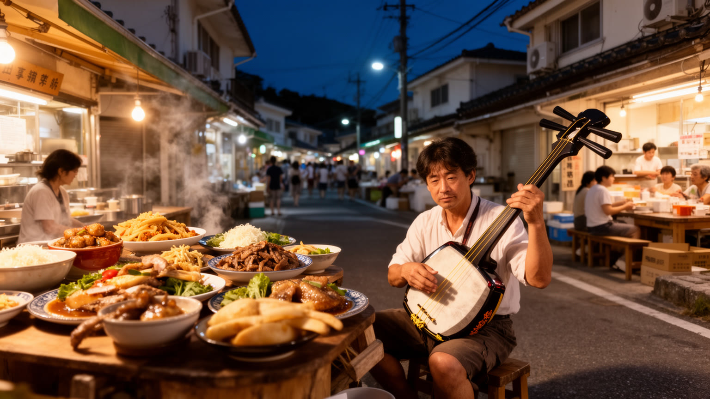
沖縄の文化は、食と音楽の中で日常的に経験されます。沖縄そば、ゴーヤーチャンプルー、ラフテー、ジーマーミ豆腐、海ぶどう、島野菜、泡盛、タコライス、ポーク玉子は、琉球、アジア、本土、米軍統治期の影響が混ざった食の記憶です。市場や食堂では観光客向けの華やかさだけでなく、家族の昼食、働く人の定食、法事や祝いの料理が続いています。第一牧志公設市場の二階で湯気が上がり、商店街では買い物袋と三線ケースがすれ違います。空手の稽古帰りの親子も席に並びます。三線、島唄、エイサー、民謡酒場、ロック、ヒップホップ、基地周辺の音楽文化は、歴史と生活感情を声にします。夜の国際通りでは土産物店の明かり、泡盛の匂い、三線の音、バスを待つ学生や観光客の声が混ざります。歌は郷愁や観光の演出に見えますが、移民、戦争、恋、労働、抗議、祖先への思いも運びます。食材の多くは島外物流に依存し、物価上昇は食卓を直撃します。音楽の現場も、ライブハウスの家賃、観光客の波、若者の仕事と結びつきます。沖縄の食と音楽を読むことは、名物を味わうだけでなく、島の歴史がどのように家庭、店、祭り、夜の街で生き続けるかを見ることです。旧盆の行事、地域のエイサー、結婚式、法事、模合の集まりでは、食と音が人を結び直します。味と音は観光商品である前に、共同体の記憶です。
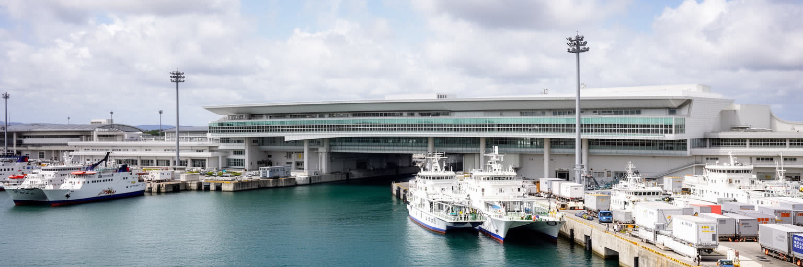
那覇港と那覇空港は、沖縄の生活と経済を支える大きな入口です。旅客機は観光客、帰省者、学生、出張者、医療搬送を運び、貨物機と船は食品、燃料、建材、日用品、郵便、工業資材を運びます。港にはクルーズ、フェリー、漁業、コンテナ、離島航路が集まり、空港は国内外の航空網と自衛隊機能も抱えます。島では物流の遅れが価格や品ぞろえに直結し、台風で船や航空便が止まれば生活の脆さが表れます。那覇の都市交通は空港、港、国際通り、新都心、周辺市町村を結ぶ必要がありますが、自動車依存と渋滞が大きな課題です。ゆいレールの発車音、バスターミナルの案内、レンタカーの列は、観光都市であると同時に通学と通勤の都市であることを示します。港湾空港を観光の玄関としてだけ見ると、島の生活を支える物流と公共性を見落とします。沖縄の都市機能は、海と空が止まらないことに大きく依存しており、その入口をどう強く公平に保つかが、島の安全と暮らしを左右します。離島から那覇へ向かう人にとって、港と空港は病院、大学、役所、親族を結ぶ生活線です。貨物の積み替えや保冷設備、災害時の代替輸送は、観光より目立たないが重要です。港湾労働、航空整備、バス運転、タクシー、配送の人手不足も都市機能に直結します。移動を支える仕事を守ることが、島の接続を守ることになります。
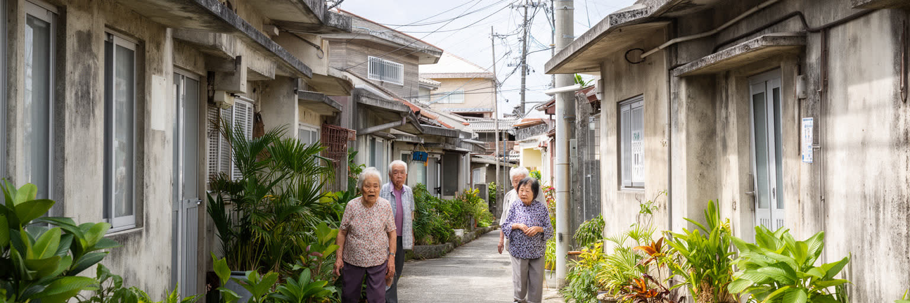
沖縄の暮らしは、強い地域のつながりと生活費の重さが同時にあります。那覇や浦添、宜野湾周辺では住宅需要が高まり、地価や家賃が上がり、若い世帯が広さと通勤時間の間で選択を迫られます。基地返還跡地の開発は新しい住宅や商業を生む一方、地域の記憶や交通負荷をどう扱うかが問われます。離島や北部では高齢化、医療への距離、買い物、公共交通、台風時の孤立が課題です。沖縄は出生率が比較的高い地域として知られますが、子育て世帯の貧困、教育費、ひとり親家庭、若者の非正規雇用も深刻です。大学や専門学校へ通う学生は街に活気を与えますが、アルバイト、奨学金、県外就職の選択も生活を左右します。家族や親族の支えは大きな力ですが、介護や育児の負担が家庭内に偏る危険もあります。観光地に近い住宅では短期滞在、騒音、駐車場、家賃上昇が住民生活に影響します。沖縄の住宅問題は、建物の数だけでなく、所得、交通、基地跡地、福祉、離島医療、台風への備えを一体で見る必要があります。都市部では車を持たない高齢者や学生の移動も課題になり、バス路線や徒歩環境の弱さが生活範囲を狭めます。公営住宅、空き家活用、地域医療、子どもの居場所を結びつけることが、家族だけに頼らない支えを作ります。若者が戻れる仕事と住宅がなければ、祭りや地域の担い手も細っていきます。
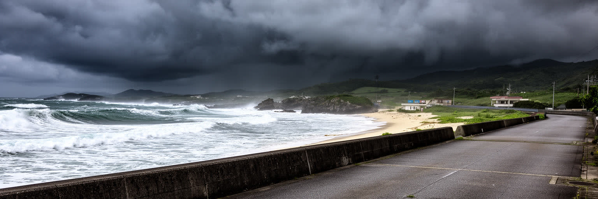
沖縄の気候は亜熱帯海洋性で、強い日射、湿気、台風、塩害、豪雨、海の変化が生活を形作ります。台風前の空気は重く、海風は塩を含み、濡れたアスファルトと植物の匂いが街に広がります。コンクリート造の住宅、台風戸、屋上タンク、低い家並み、風を読む習慣は、気候への適応として生まれてきました。台風が近づけば航空便や船が止まり、学校、観光、物流、医療、農業に影響します。スーパーで水やパンを買い足す列も、台風と暮らす島の準備です。海遊びの安全確認も欠かせません。海水温の上昇と珊瑚礁の白化は、景観だけでなく漁業、観光、波を弱める自然の防波機能にも関わります。海面上昇、高潮、海岸侵食は、リゾート地、港、道路、低地の集落、離島にリスクを広げます。暑さは屋外労働者、高齢者、子ども、観光客に負担をかけ、日陰や休息、水分補給の設計が重要になります。沖縄の気候対策は、観光資源を守るためだけではありません。島で暮らす人が災害時に安全に移動し、食料と水と情報に届き、復旧まで支え合える条件を作ることです。農業ではサトウキビ、野菜、畜産が台風や干ばつに左右され、漁業も海の変化を受けます。観光施設が海岸近くへ集まるほど、避難計画と環境保全は経営の問題にもなります。避難所の暑さ対策、停電時の通信、離島への物資輸送も重要になります。
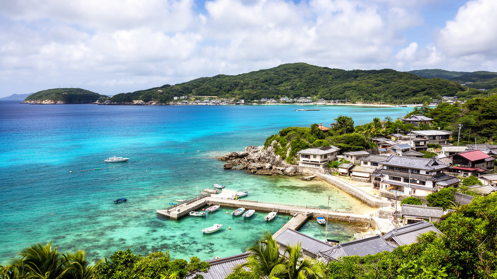
沖縄の遺産は首里城だけではありません。今帰仁城跡、勝連城跡、斎場御嶽、識名園、座喜味城跡のような琉球王国関連の場所、やんばるの森、宮古や八重山の島々、竹富の集落、西表の自然、久高島の信仰は、それぞれ違う時間を持っています。城跡は軍事と政治の記憶、御嶽は祈りの場、古い集落は親族と土地の記憶、自然遺産は生態系と暮らしの関係を示します。観光が増えると、立ち入り、写真、交通、宿泊、環境負荷、地域の静けさが問題になります。離島では、観光収入が大切である一方、水、廃棄物、医療、住宅、船便の容量が限られます。遺産を守るとは、石垣や景観を残すだけでなく、祈り、言葉、旧盆、エイサー、綱引き、ハーリー、農漁業、ガイド、清掃、学校教育を支えることです。沖縄の島々を巡る時、名所を点で消費するのではなく、それぞれの島が持つ人口規模、交通、歴史、自然の限界を読む必要があります。遺産は観光資源である前に、住民が今も使い、守り、悩む生活の場所です。ガイドの説明、立ち入り制限、祭礼への配慮、自然保護のルールは、訪問者が何を学ぶかを左右します。島ごとの小さな違いを尊重することが、沖縄全体を一つのリゾート像へ押し込めないための手がかりになります。静かな場所ほど、訪問者の数や振る舞いが地域に強く響きます。守るべきものは景観だけでなく、沈黙や祈りの時間でもあります。
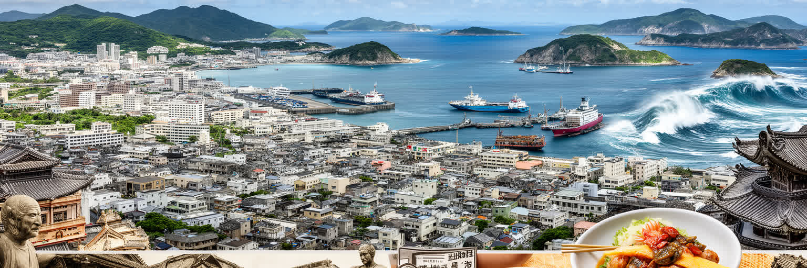
沖縄を読むことは、南国の観光地という一枚の絵をほどき、海に開かれた都市圏の重層性を見ることです。那覇の港と空港、首里の王国史、沖縄戦の記憶、米軍基地、観光産業、離島航路、食と音楽、台風への備えは、別々の話ではありません。どれも島の限られた土地と海上交通、そして日本本土や東アジアとの関係に戻ってきます。旅行者が感じる明るさの背後には、ホテル労働、港湾物流、基地負担、戦争の証言、家族の支え、海の環境保全があります。FC琉球、琉球ゴールデンキングス、空手大会、マラソン、海遊びは、子どもや学生が地域へ参加する入口にもなります。ローカルTVやラジオは台風情報、基地ニュース、祭り、スポーツ、方言の響きを日々届け、県民の共通の話題を作ります。都市としての沖縄を見るには、那覇の街路だけでなく、中部の基地周辺、北部の森、宮古や八重山の島々、県外へ働きに出る若者まで同じ地図に置く必要があります。沖縄は周縁ではなく、東アジアの海を読むための中心です。観光、平和、自治、環境、暮らしを同時に考える時、この島の都市性がはっきり見えてきます。沖縄の価値は、単に本土と違う風景を持つことではなく、国家、軍事、観光、文化、気候が一つの生活圏で衝突しながら調整される点にあります。島を読む視点は、訪れる人の楽しみと住む人の権利を同時に見ることから始まります。